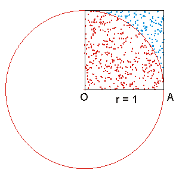

Estruturas de repetição¶
-
Chico tem 150 cm e cresce 2cm por ano, enquanto Zé tem 110cm e cresce 3cm por ano. Faça um programa que calcule e imprima quantos anos são necessários para que Zé fique mais alto que Chico.
-
Faça um programa que leia as notas de um aluno e calcule a média das notas. Não se sabe, de antemão, o número de notas a serem lidas, e a leitura deve encerrar quando uma nota negativa for informada.
-
Na matemática, um número perfeito é aquele no qual a soma dos seus divisores positivos próprios (excluindo-o) é igual ao próprio número. Por exemplo, 6 é perfeito, pois \(1 + 2 + 3 = 6\). Escreva um programa que leia um número inteiro positivo menor ou igual a \(10^8\) e indique se o número é perfeito ou não.
-
Faça um programa que imprima os múltiplos positivos de 7, menores que 1000
-
Determinado material radioativo tem meia-vida de 70 segundos (tempo necessário para que a massa da amostra se reduza à metade). Faça um programa que leia a massa inicial e diga quanto tempo (em dias, horas, minutos e segundos) é necessário para que reste menos de 0,02g do material.
-
A sequência de Fibonacci é formada pelos números 0, 1, 1, 2, 3, 5, 8, 13, 21... (o número da vez é a soma dos dois anteriores, sendo que o primeiro vale zero, e o segundo vale um). Faça um programa que imprima a sequência de Fibonacci até o n-ésimo termo, informado pelo usuário.
-
Faça um programa que leia o número de andares de um prédio e, em seguida, para cada andar do prédio, leia o número de pessoas que saíram e o número de pessoas que entram naquele andar. Considere que o elevador está no térreo e inicialmente vazio. O elevador nunca pode ter mais de 7 pessoas simultaneamente dentro dele. Se, em algum momento, houver mais de 7 pessoas no elevador, imprima uma mensagem e deixe apenas 7 pessoas dentro dele. Imprima o número de pessoas que chegaram ao último andar.
-
Escreva um programa que receba um número inteiro, com qualquer quantidade de dígitos, e escreva na tela os dígitos que compõem o número de trás para a frente. Por exemplo, se for digitado o valor "4532", o programa deve imprimir "dois três cinco quatro".
-
Produza uma aproximação do valor de \(\pi\) utilizando a série de Gregory-Leibniz (abaixo). O cálculo deve parar quando a diferença ente \(\pi\) calculado até o terno \(n\) e o calculado até o termo \(n+1\) for menor que \(10^{-5}\). Imprima o valor calculado de \(\pi\) e o número de termos que foram utilizados no cálculo da série. Cuidado com a alternância de sinal entre os termos da série.
\[ \pi \approxeq 4 - \dfrac{4}{3} + \dfrac{4}{5} - \dfrac{4}{7} + \dfrac{4}{9} \ldots \] -
Outra forma de obter uma aproximação do valor de π é por meio da série de Nilakantha (abaixo). Obtenha uma aproximação de \(\pi\) com o uso dela. O cálculo deve parar quando a diferença ente \(\pi\) calculado até terno \(n\) e o calculado até o termo \(n+1\) for menor que \(10^{-5}\). Imprima o valor calculado de \(\pi\) e o número de termos que foram utilizados no cálculo da série. Cuidado com a alternância de sinal entre os termos da série.
\[ \pi \approxeq 3 + \dfrac{4}{2 \times 3 \times 4} - \dfrac{4}{4 \times 5 \times 6} + \dfrac{4}{6 \times 7 \times 8} - \dfrac{4}{8 \times 9 \times 10} \ldots \] -
Métodos de Monte Carlo são métodos estatísticos que sem baseiam em amostragens aleatórias para a obtenção de resultados numéricos. Nesses métodos, dada uma probabilidade \(p\) que determinado evento ocorra em certas condições, um computador pode ser usado para gerar essas condições por várias vezes. O número de vezes que o evento ocorreu dividido pelo número de vezes que a condição foi gerada deve ser aproximadamente igual a \(p\). Por exemplo, vamos considerar um disco de raio 1 inscrito em um quadrado de lado 2. É possível gerar pontos aleatórios dentro do quadrado e contar quantos caem dentro do disco. A razão entre o número de pontos dentro do círculo e o total de pontos gerados é uma aproximação de \(\pi\). Observe que, como podemos dividir o disco em quatro seções iguais (ou quadrantes), cada uma inscrita em um quadrado de lado 1 (ver figura abaixo1 ), podemos limitar esse teste ao quadrado de lado 1 e multiplicar o número resultante por quatro. Construa um programa que faça a estimativa do valor de \(\pi\) utilizando este método com 1.000.000 de pontos aleatórios2.

Estimando o valor de \(\pi\) com lançamentos aleatórios
-
Determinada universidade fez uma pesquisa entre os alunos para saber o quanto eles usam o restaurante. Faça um programa que leia um conjunto de respostas de alunos e imprima o total absoluto e em termos percentuais, de alunos que usaram o restaurante: a) menos de 10 vezes; b) mais de 10 e menos de 25 vezes, e; c) 25 vezes ou mais durante o mês. O programa deve parar de ler respostas quando for digitado o valor -1.
-
Construa um programa que leia a largura L e a altura A de um retângulo e desenhe-o na tela. Por exemplo, se o usuário pedir largura 10 e altura 4, o seguinte retângulo deve ser desenhado na tela
-
Construa um programa que leia um número inteiro \(N\), calcule e mostre o maior quadrado menor ou igual a \(N\). Por exemplo, se \(N\) for igual a 38, o maior quadrado é 36.
-
Faça um programa que imprima os primeiros 20 números inteiros que quando divididos por 11 produzem 5 de resto.
-
Escreva um programa que leia o número \(n\) de termos de uma progressão aritmética, o primeiro termo (\(a_1\)) da progressão e a razão \(r\) da progressão e escreva os \(n\) termos desta progressão, bem como a soma dos elementos.
-
A divisão de dois números pode ser feita como uma sucessão de subtrações do valor do divisor do valor do dividendo. O número de divisões que puderam ser feitas antes de o dividendo ficar menor que zero é o quociente, e o que sobrou do dividendo é o resto da divisão. Faça um programa que leia o dividendo e o divisor e apresente o quociente e o resto utilizando o método das subtrações sucessivas.
-
Faça um programa que leia valores inteiros positivos e diga, no final, quantos números pares foram lidos, quantos números ímpares foram lidos, o maior número lido e o menor número lido. A entrada de dados para com a digitação do valor -1.
-
Faça um programa que imprima os primeiros 100 números inteiros que não são múltiplos de 7 ou que terminam em 7 (1, 2, 3, 4, 5, 6, 8, 9, 10, 11, 12, 13, 15, 16, 18, ...)
-
O voleibol é um esporte disputado em uma quadra dividida ao meio por uma rede, com dois times de 6 jogadores cada, onde o objetivo é fazer a bola passar sobre a rede de modo a que a bola toque no chão dentro da quadra adversária, ao mesmo tempo que se evita que os adversários consigam fazer o mesmo. O jogo começa com o saque de um dos times. Logo depois do saque, a bola deve ultrapassar a rede e seguir ao campo do adversário onde os jogadores tentam evitar que a bola entre no seu campo usando qualquer parte do corpo. O jogador pode rebater a bola para que ela passe para o campo adversário sendo permitidos dar três toques na bola antes que ela passe, sempre alternando os jogadores que dão os toques. Caso a bola caia, é ponto do time adversário. O jogador não pode encostar na rede e, caso isso ocorra, o ponto será para o outro time. O mesmo jogador não pode dar 2 ou mais toques seguidos na bola, exceção no caso do toque de Bloqueio. Cada partida é dividida em sets que terminam quando uma das duas equipes conquista 25 pontos. Deve haver também uma diferença de no mínimo dois pontos com relação ao placar do adversário - caso contrário, a disputa prossegue até que tal diferença seja atingida. O vencedor é a equipe que ganhar, primeiro, três sets. Você deve construir um programa que, a cada indicação de ponto feita (1 para o primeiro time, e 2 para o segundo time), indique o placar atual. Quando faltar um ponto para um time vencer um set, escreva "set point" e, quando um time vencer, escreva o número do time que ganhou.
-
Na bolsa de valores, um investidor normalmente faz "preço médio" de um papel. A ideia é tentar entrar no papel em preços diferentes, exatamente para tê-lo na carteira com um preço que seja a média do preço dele ao longo de determinado tempo. O preço médio é calculado como uma média ponderada dos preços de compra. Quando um papel é vendido, calcula-se o LAIR (lucro antes do imposto de renda) como sendo a diferença entre o preço de venda e o preço médio de compra. Sobre o lucro da operação, o investidor paga 15% de imposto de renda, mas legislação permite que sejam alienados (vendidos) até \(R\$~20000.00\) por mês sem que seja necessário pagar imposto de renda sobre o lucro. Por exemplo, se forem compradas 100 ações de determinado papel a 10.00, e 300 ações a 7.00, o preço médio é de \(\dfrac{100\times10+300\times7}{100+300}=7.75\). Se as 400 ações fossem vendidas a 10,00, o LAIR seria de 900,00 e não haveria imposto a pagar. Construa um programa que leia um inteiro N dizendo quantas compras foram feitas, N pares de valores indicando quantas ações foram compradas e a que preço, e um valor que indica o preço de venda (assuma que todas as ações compradas foram vendidas); a partir disso, calcule e imprima o LAIR e o valor do imposto a ser pago.
-
https://www.r-bloggers.com/happy-pi-day-now-go-estimate-it/ ↩
-
Apesar de métodos de Monte Carlo serem úteis para a solução de vários problemas em matemática e física que não podem ser resolvidos de forma analítica, a adoção deste método para a estimativa do valor de \(\pi\) é bem lento. Para calcular cada dígito significativo depois da vírgula são necessárias dez vezes mais pontos aleatórios que os necessários para calcular o dígito anterior. ↩